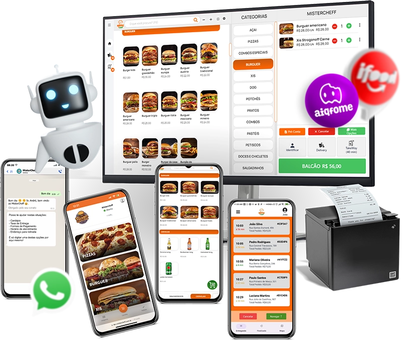
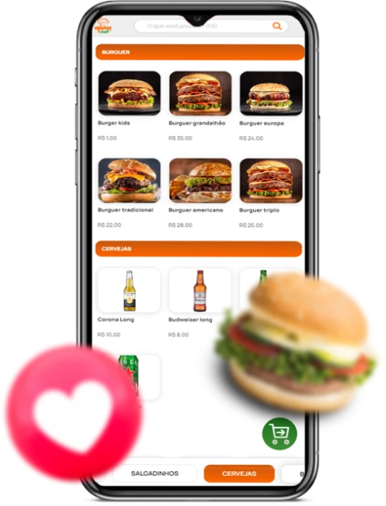
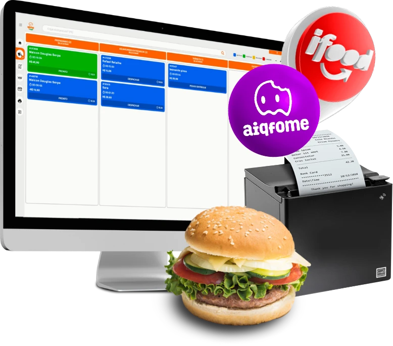
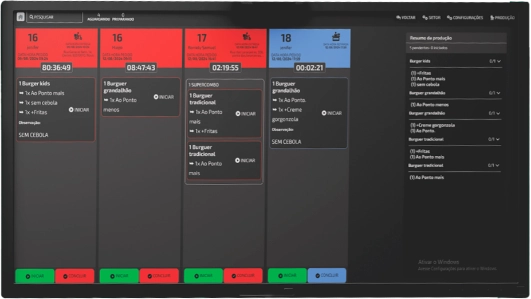
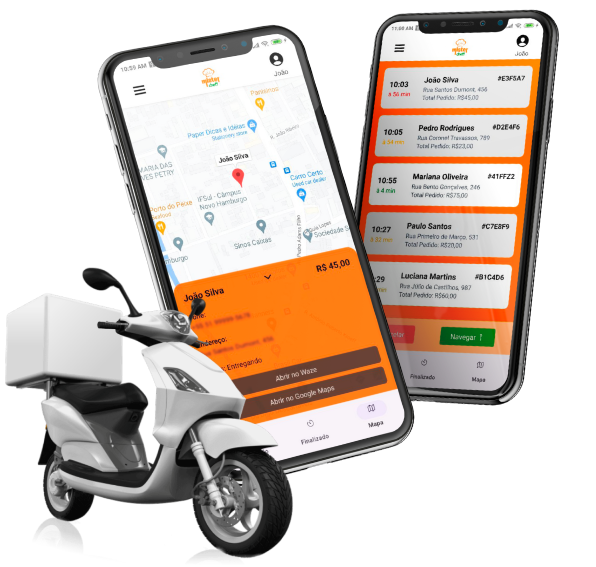

Diagnóstico
Entendemos seu tipo de operação: restaurante, bar, lanchonete, pizzaria, delivery ou operação mista.
Tecnologia que simplifica sua operação. A Wale Solutte ajuda sua empresa na instalação, configuração, orientação da equipe e suporte para usar o MisterCheff no dia a dia com mais controle.

O MisterCheff reúne recursos para operação de food service, como PDV fixo e móvel, delivery, cardápio digital, QR Code, atendimento via WhatsApp, aplicativos operacionais, emissão fiscal, KDS e muito mais.
Mais do que implementar o sistema: nós ajudamos sua operação a funcionar.
Não basta ter um sistema completo. É preciso configurar, orientar e acompanhar a operação para que caixa, salão, cozinha e delivery trabalhem de forma organizada.
Entendemos seu tipo de operação: restaurante, bar, lanchonete, pizzaria, delivery ou operação mista.
Ajustamos módulos, cadastros, fluxos de venda, impressoras, atendimento e recursos necessários.
Ajudamos sua equipe a usar o sistema em situações reais: mesa, comanda, balcão, delivery e fechamento.
Após a implantação, acompanhamos sua operação para reduzir dúvidas e melhorar o uso no dia a dia.

Atendimento no caixa, salão e operação móvel para agilizar pedidos e vendas.

Pedidos centralizados, integração com canais de venda e impressão para produção.
Fluxo de pedidos e respostas automáticas para reduzir espera e perda de atendimento.

Organização de pedidos na produção, reduzindo papel e melhorando o controle.

Recursos para garçom, entregador e acompanhamento de pedidos em tempo real.
Emissão fiscal, Pix, controle de caixa e rotinas importantes para a operação.
Nosso foco é ajudar a empresa a usar o MisterCheff com segurança: módulos corretos, equipamentos configurados, equipe orientada e suporte para a rotina de atendimento.
Processos espalhados, pedidos manuais, dúvidas na equipe e retrabalho.
Operação orientada, sistema configurado e uso mais claro no atendimento.
Converse com a Wale Solutte e entenda como podemos ajudar na configuração, orientação e suporte do sistema para sua operação.
Atendimento via WhatsApp para demonstração, implantação, configuração e suporte.
Quero conhecer o MisterCheff